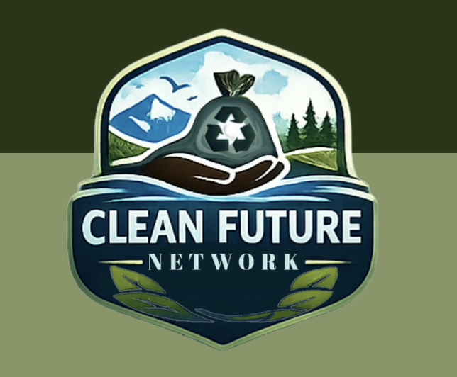

CLIENT
Clean Nature Network (fic)
ROLE
Phone App Designer
DELIVERABLES
Title Development
Book Concept Development
Cover Design
Spine & Back Cover Design
YEAR
2025
PROJECT OVERVIEW
Death By Music is a conceptual book cover design project created for fictional author Aria Belle. The thriller follows a musician who becomes obsessed with controlling the world of music through violence, creating a story centered around obsession, identity, and the darker side of artistic ambition.
The goal was to develop a cover design that immediately communicates the psychological tension of the story while balancing musical elegance with unsettling visual elements. The project explored how typography, imagery, and composition can establish genre, introduce character, and create curiosity before the reader opens the book.
DESIGN APPROACH
The visual direction combines theatrical typography, high-contrast imagery, and musical symbolism to create a cover that feels both sophisticated and unsettling. Piano keys, dramatic composition, and blood-red accents were used to reinforce the connection between music and mystery while creating a recognizable editorial identity across the front cover, spine, and back cover.
Multiple concepts were explored before selecting the final direction, allowing the design system to develop through experimentation with typography, layout, and visual storytelling.

Early concept exploration featuring three cover directions developed in Adobe Illustrator. Each design tested different approaches to typography, musical symbolism, and thriller-inspired visual language before selecting the final concept.

Visual development moodboard exploring the atmosphere, typography inspiration, color palette, and thematic elements used to guide the Death By Music cover design.
Complete book jacket layout showing the front cover, spine, and back cover design. The final composition demonstrates how typography, imagery, and narrative elements were carried consistently across the entire publication.